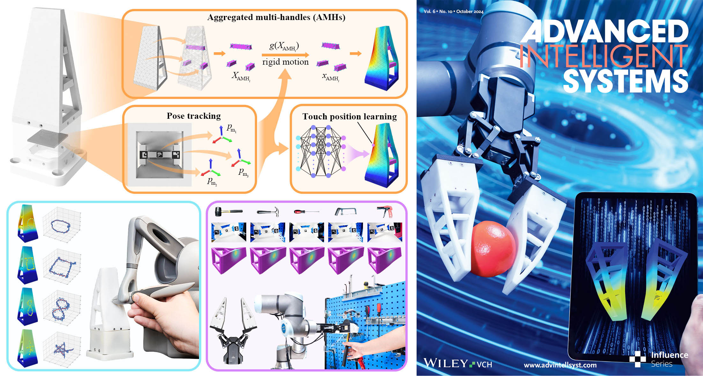

Incorporating authentic tactile interactions into virtual environments presents a notable challenge for the emerging development of soft robotic metamaterials. This study introduces a vision-based approach to learning proprioceptive interactions by simultaneously reconstructing the shape and touch of a Soft Robotic Metamaterial (SRM) during physical engagements. The SRM design has been optimized to the size of a finger with enhanced adaptability in 3D interactions while incorporating a see-through viewing field inside, which can be visually captured by a miniature camera underneath to provide a rich set of image features for touch digitization. Employing constrained geometric optimization, we modeled the proprioceptive process with Aggregated Multi-Handle (AMHs). This approach facilitates real-time, precise, and realistic estimations of the finger's mesh deformation within a virtual environment. We also proposed a data-driven learning model to estimate touch positions, achieving reliable results with impressive R2 scores of 0.9681, 0.9415, and 0.9541 along the x, y, and z axes. Furthermore, we have demonstrated the robust performance of our proposed methods in touch-based human-cybernetic interfaces and human-robot collaborative grasping. This study opens the door to future applications in touch-based digital twin interactions through vision-based soft proprioception.
Taking inspiration from fish fins for fluidic propulsion, the Fin Ray Effect (FRE) offers a compliant planar design characterized by passive adaptation, allowing the finger to envelop objects based on geometric contact in the 2D plane. We initiated several design enhancements to improve the finger's spatial adaptation. The soft finger is molded with a three-component polyurethane elastormer, Hei-Cast 8400. Beneath the finger, a monocular camera was added to capture images at 60 frames per second. Three markers (8mm wide ArUco markers) were attached to the undersides of three rigid marker plates attached beneath three finger beams. The unobstructed cavity inside lets the camera fully capture the markers' poses, enabling a data-driven approach for shape and touch estimation during interactions.
This experiment demonstrates the effectiveness of the proposed method for shape estimation of the soft finger. The soft finger was mounted on the platform, and a Touch haptic device was used to contact the surface of the finger. We manually selected 150 contact points on the surface of the finger, which roughly covered the whole surface. At each selected point, the pen-nib of the Touch was used to make contact and push forward five times. During the process, the camera under the finger captured images at 60 fps to get the poses of the three markers, corresponding to the boundary conditions of the AMHs for shape estimation. The Touch also recorded the position of the pen-nib. To evaluate the result of our proposed method for shape estimation, we reconstruct the deformed shape of the soft finger using observed AMHs rigid motion and compare the estimated position of the contact point on the finger surface with the recorded position of pen-nib along pushing path. The position error distribution between the recorded surface point and the corresponding reconstructed deformed surface point is acceptable, with a more significant error concentrated on the upper part of the finger surface.

This section presents the result using an adjoint-based method to reconstruct a surface force distribution that explains the AMH motion from visual observation. We generate four synthetic test cases using a discretized mesh model and a Neo-Hookean hyperelastic constitutive model E = 10 Mpa, μ = 0.47. We only permit admissible non-zero nodal forces at a small portion of vertices on the contact surface. Otherwise, the optimization process can quickly fail to converge, primarily due to applying a nonlinear hyperelasticity model. Apart from robustness concerns, each scenario takes nearly thirty seconds to achieve optimal estimation convergence, which may not be acceptable for real-time perception applications. It is pertinent to note that while the BFGS algorithm is robust, it exhibits sensitivity to initial values and a propensity for slow convergence in the context of our application. These characteristics render it suboptimal for real-time sensing applications, as the computational demands cannot meet the latency requirements for immediate feedback or adjustments in practical settings. Recognizing these constraints, our research transitions from a deep, model-based analysis to a learning-based approach.

We establish a fixed bottom boundary condition and simulate point contact with a concentrated load. Through uniformly sampling different load positions and forces, we capture the motion of the AMHs across various deformation configurations. The comparison between the neural network output and the ground truth from the simulation is summarized with coefficients of determination (R2) and root mean square errors (RMSE) of three dimensions reported. Specifically, in our dataset, the range of variation is approximately 120mm on the y-axis, in contrast to 60mm on the x-axis and 30mm on the z-axis. This variance in scale significantly influences the RMSE values, resulting in 0.6125mm for the y-axis, 0.3645mm for the x-axis, and 0.1310mm for the z-axis. Additionally, it is crucial to consider the physical and mechanical properties of the soft robotic metamaterial structure, which might exhibit different behaviors or responses under varying stress or deformation across different axes. These characteristics are likely to further complicate the accurate prediction of touch positions on the y axis compared to the x and z axes. These outcomes suggest that employing a designed observation input from AMH is adequate for the point-wise touch position estimation task.

As shown in figure, the distributions of estimation errors along the x and z axes exhibit a more pronounced concentration than that along the y axis. Compared with the model evaluation with simulation data, the R2 scores with actual experiment data, though still substantial, show a marginal decrease to 0.9681, 0.9415, and 0.9541, respectively. The discrepancy in performance, as evidenced by the slight decrease in the R2 score, can primarily be attributed to the gap between the simulated and real-world datasets. The simulation data, generated using ABAQUS FEM simulation, benefits from being noise-free and highly controlled. Such data allows for precise learning and prediction, as the variables and conditions are simplified versions of real-world phenomena, leading to potentially higher performance metrics. In contrast, the real-world data collected for training the same MLP model encompasses a broader spectrum of variability and randomness inherent to physical interactions. During data collection and model training, we noticed that estimating contact positions across the entire surface of the finger could lead to non-unique solutions. This indicates a disparity between the simulation model and the fabricated soft robotic metamaterial. We attribute this to the constrained number of visual observations from a practical usage perspective, similar to the challenges in shape estimation.

In this experiment, we assessed the efficacy of touch interaction using the proposed touch perception-enabled soft finger, explicitly focusing on real-time dynamic touch estimation by detecting the contact path on the surface of the soft finger. We employed the pen-nib of the Touch haptic device to trace paths of various shapes while consistently maintaining contact with the surface of the finger. Throughout this process, real-time estimation of contact positions was performed using a learning-based touch estimation model. We utilized four distinct path shapes—specifically, circle, square, number 8, and star, to assess the precision of touch estimation during dynamic interactions.
As touch-induced deformation of the finger and the pen-nib made continuous contact with the finger surface, the paths traversed by the pen-nib existed in three-dimensional space. The results demonstrate that the estimated touchpoints align well with the actual paths. While a few outliers are evident, they do not significantly impact the pen-nib's path shape estimation.
Incorporating touch perception-enabled soft fingers into an industrial robotic gripper allows these systems to dynamically adapt their grasp in real-time based on tactile input during object contact. This integration allows for a more refined and adaptable touch, facilitating robust, gentle, and intelligent interaction with the environment.
We outline an industrial human-robot collaboration scenario, where the robot is instructed to grasp diverse tools, each with unique geometries from a tool organizer and transfer them to a human worker. Equipped with the designed soft robotic fingers, a rigid industrial gripper effectively demonstrates its adaptable capability to securely grasp a variety of tools. Real-time touch estimation offers essential information for the grasping system to accomplish the human-robot collaboration task.

Here, we provide a full-system demonstration using our vision-based soft robotic fingers on an underwater Remotely Operated Vehicle (ROV, FIFISH PRO V6 PLUS, QYSEA). It includes a single-DOF robotic gripper, which can be modified using the proposed soft fingers with customized adaptors. Our design conveniently introduced omni-directional adaptation capability to the gripper's existing functionality with added capabilities in real-time tactile sensing underwater. Using the in-finger images, we can use the methods proposed in this work to achieve real-time reconstruction of contact events on our soft robotic finger.
Since our soft finger can provide large-scale, adaptive deformation conforming to the object's geometric features through contact, we could infer shape-related contact information from the finger's estimated shape during the process. We assume the soft finger's contact patch coincides with that of the object during grasping. As a result, we can predict object surface topography using spatially distributed contact points on the touching interface. In this case, we used a parallel two-finger gripper (HandE from Robotiq, Inc.) attached to the wrist flange of a robotic manipulator (Franka Emika) through a 3D-printed cylindrical rod for an extended range of motion. Our soft robotic fingers are attached to each fingertip of the gripper through a customized adapter fabricated by 3D printing. With the gripper submerged underwater, the system is programmed to sequentially execute a series of actions, including gripping and releasing the object and moving along a prescribed direction for a fixed distance to acquire underwater object shape information.
@article{guo2024proprioceptive,
title={Proprioceptive State Estimation for Amphibious Tactile Sensing},
author={Guo, Ning and Han, Xudong and Zhong, Shuqiao and Zhou, Zhiyuan and Lin, Jian and Dai, Jian S and Wan, Fang and Song, Chaoyang},
journal={IEEE Transactions on Robotics},
year={2024},
publisher={IEEE}
}